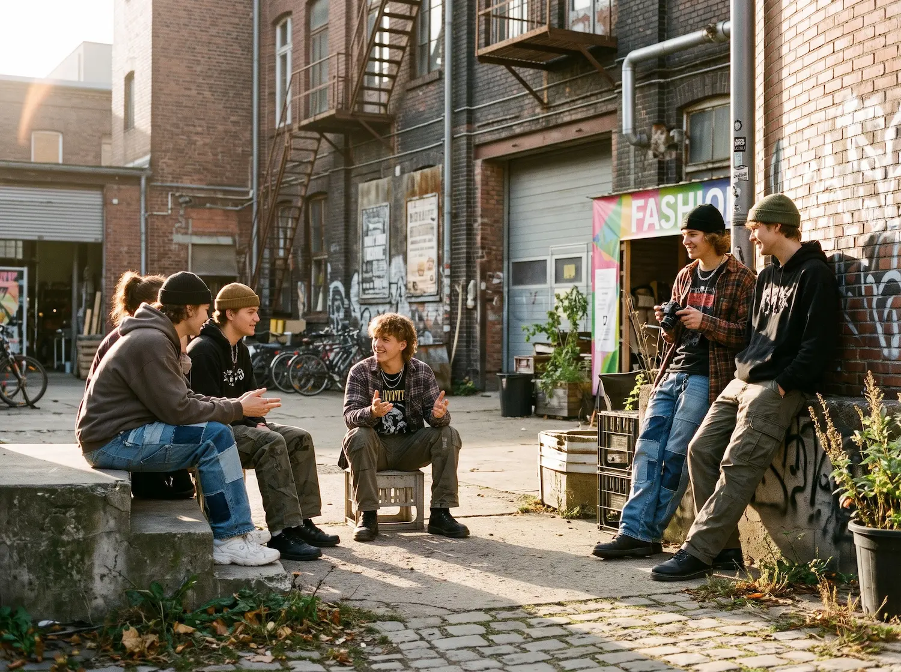

Infos, Anfahrt & Häufige Fragen
Anfahrt & Location
Kulturwerkstatt Altona-Nord
Stresemannstraße 374
22761 Hamburg
Mit Bahn & Bus:
Das Veranstaltungskonzept nennt S-Bahn S3 oder S5 bis Diebsteich sowie MetroBus Linie 3 bis Bornkampsweg. Bitte Verbindungen und Weg vor einer tatsächlichen Anreise selbst prüfen.
Barrierefreiheit:
Im Konzept ist die Halle als ebenerdig und stufenlos vorgesehen. Angaben zu einem realen Veranstaltungsort sind nicht geprüft; Zugänglichkeit bitte vor einem Besuch direkt mit dem Ort klären.

Häufige Fragen (FAQ)
1. Muss ich einen besonderen Dresscode einhalten?
Nein! Komm genau so, wie du dich wohlfühlst. Egal ob Baggy-Jeans, selbstbemalte Jacke, Vintage-Kleid oder schlichter Hoodie – je individueller, desto besser.
2. Ab welchem Alter darf ich ohne Begleitung kommen?
Das Konzept richtet sich an Jugendliche ab 13 Jahren. Da es keine echte Veranstaltung gibt, sind Einlass-, Begleit- und Jugendschutzregeln nicht festgelegt. Bei einer realen Veranstaltung müssen sie vorab mit dem Veranstalter geklärt und rechtlich geprüft werden.
3. Gibt es vor Ort Essen und Getränke zu fairen Preisen?
Im Konzept sind ein veganer Streetfood-Stand, Limonaden und kostenloses Leitungswasser vorgesehen. Diese Angebote gibt es nicht tatsächlich, da es sich um ein Studienprojekt handelt.
4. Wird auf der Veranstaltung Alkohol ausgeschenkt?
Das Konzept sieht eine alkoholfreie Jugendveranstaltung mit Limonaden und Eistees vor. Es findet keine Veranstaltung statt.
5. Darf ich Fotos und TikTok-Videos vom Laufsteg machen?
Das ist eine fiktive Veranstaltungsidee. Für reale Veranstaltungen müssen Foto- und Filmregeln bekanntgegeben werden. Frag vor Aufnahmen andere Personen um Erlaubnis und veröffentliche insbesondere Bilder Minderjähriger nicht ohne passende Zustimmung.
Impressum
Studienprojekt der Kunstschule Wandsbek – keine echte Veranstaltung.
Verantwortlich für den Inhalt dieses Projekts:
Gunt (Kurs Webdesign)
Kunstschule Wandsbek – Neumann-Reichardt-Straße 27–33, 22041 Hamburg
Kontakt: info@cut-and-catwalk-projekt.example (Beispieladresse)
Bildnachweis
Die Grafiken und Bilder liegen lokal im Projektordner. Die freigestellten Motive stammen aus den Projekt-Assets:
- Logo & Icons (logo.svg, icon-ticket.svg, icon-star.svg, icon-tape.svg): Vektorgrafiken, erstellt im Rahmen des Projekts.
- Model-Cutout (model-cutout.png): Transparente Freistellung aus dem bereitgestellten Ausgangsbild model-cutout.JPG.
- Upcycling-Patch (upcycling-patch.png): Bereitgestelltes freigestelltes Patch-Motiv.
- Weitere lokale Motive: hero-collage.webp, runway-stage.jpg, backstage-1.webp, backstage-2.jpg, designer-team.jpg, zine-spread.webp, sneaker-detail.jpg, crowd-vibe.webp und og-image.jpg. Bitte ergänze bei externer Herkunft die jeweilige Urheberangabe.
- Animiertes GIF (glitch-catwalk.gif): Projekt-Asset im lokalen Ordner.
- Schrift: Space Grotesk, bezogen über Google Fonts.